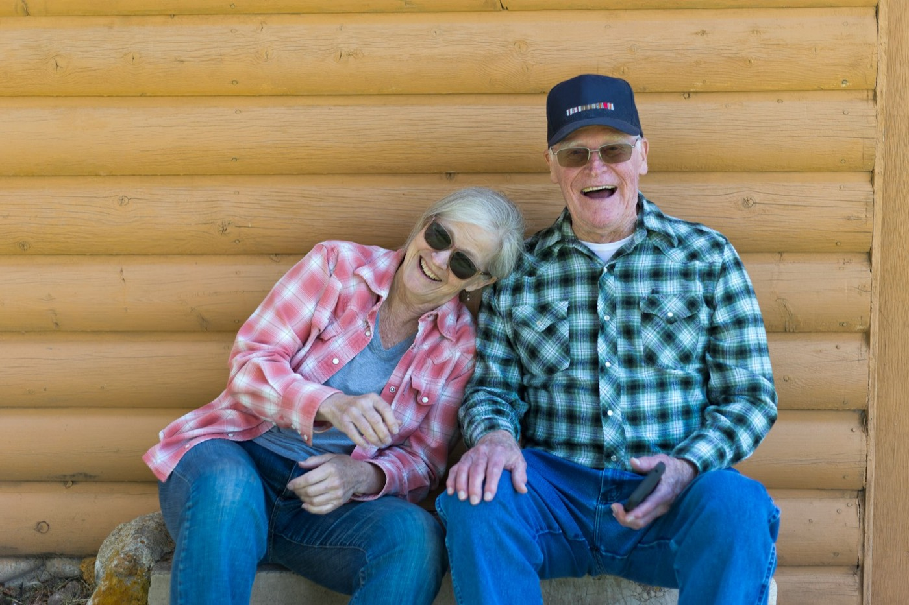
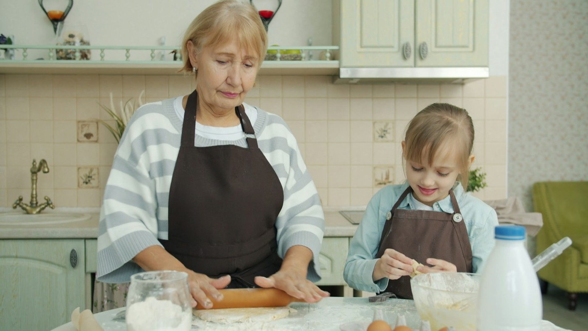
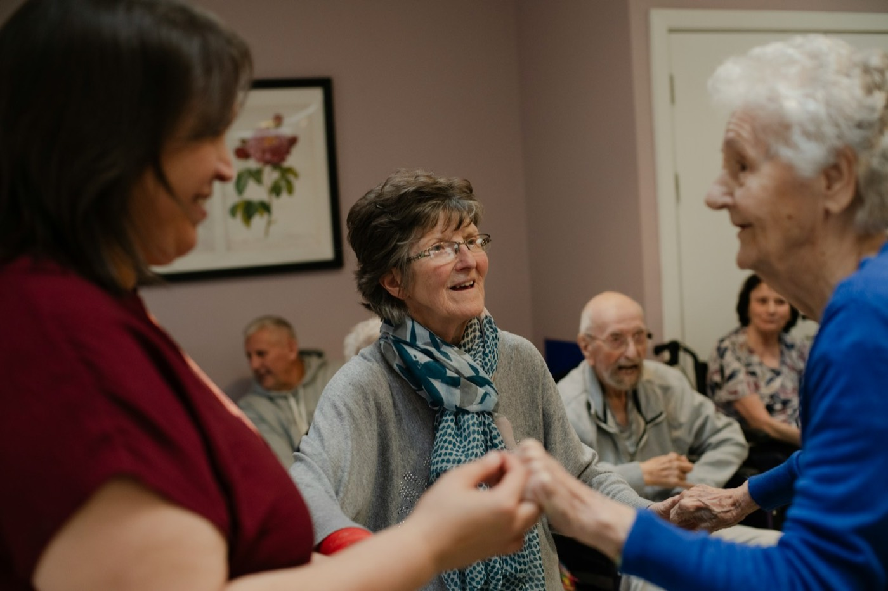
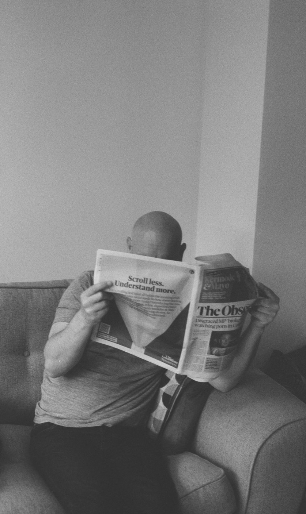
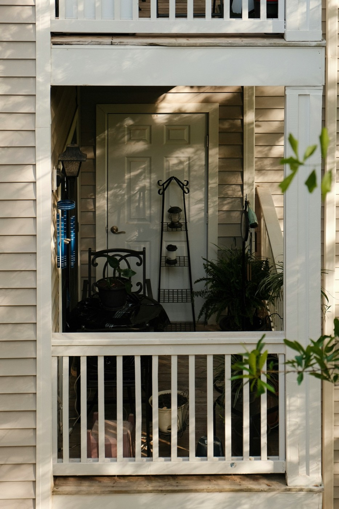
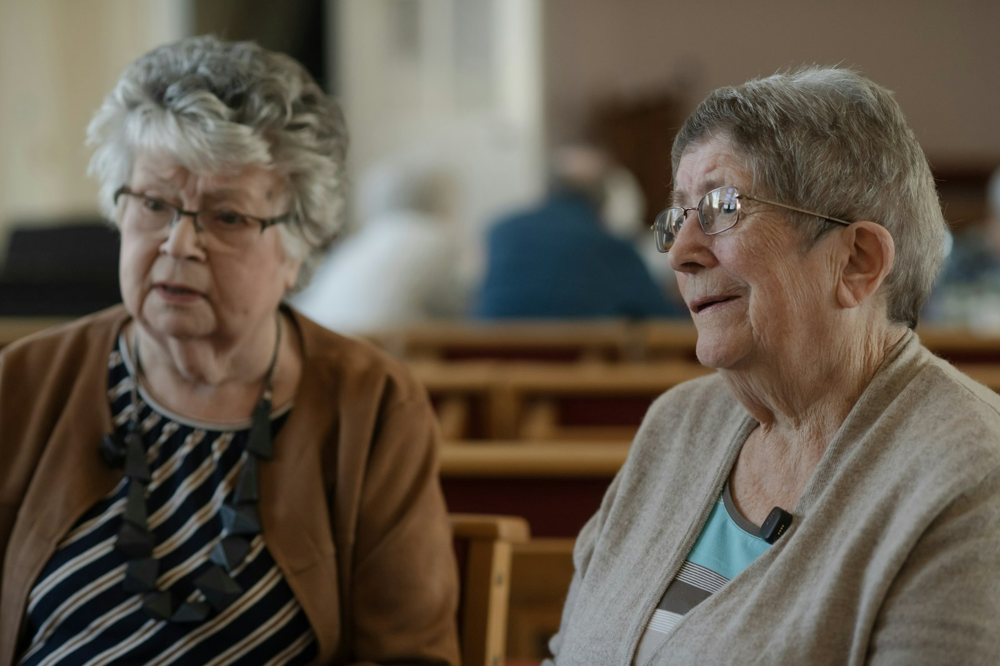
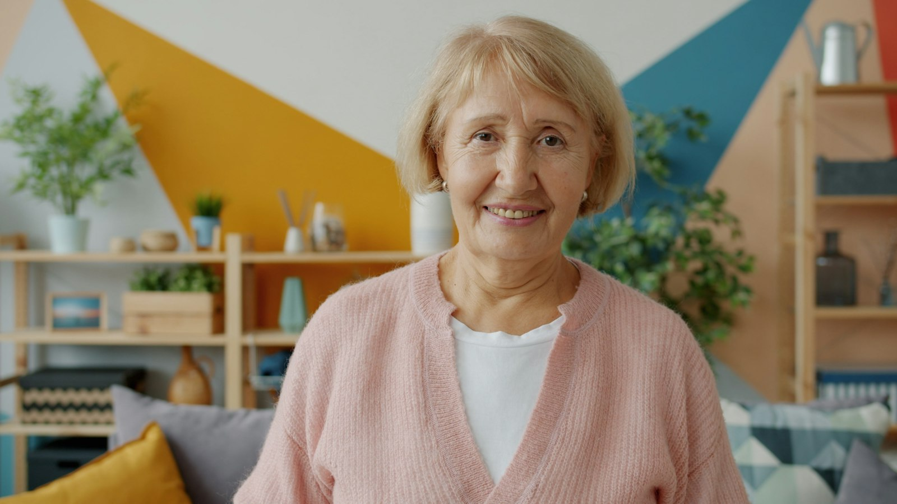

Two older women smiling at a table
Two older women smiling at a tableWho it is for
For people who are lonely, or managing but slipping.
Long days alone. Meals skipped because cooking for one feels pointless. Fewer phone calls, fewer outings, more television.
Companion care brings back the ordinary good things: conversation, a cooked lunch, a walk, a reason to get dressed. It also means someone notices early when things change.
Daily life
What a companion visit looks like.
- 10:00
Arrive and catch up
Coffee, the news, what is on their mind.
- 10:30
Something practical
Shopping, a prescription, laundry, the garden.
- 12:00
Lunch together
Cooked together where possible, and drinks recorded.
- 13:00
Out or in
A walk, an outing or a project at home.
- 14:30
Wind down
A note in the app for the family and a plan for next time.
Outing ideas
Getting out, at their pace.
Meal and activity library
Ideas our caregivers bring with them.
Breakfast club
Pancakes, eggs the way they like them and the morning paper read aloud.
Soup and bake
Cooking an old family recipe together, then sharing it with a neighbour.
Music hour
Their favourite decade on the speaker, singing optional.
Memory box
Old photos, postcards and objects that start a conversation.
Garden jobs
Watering, deadheading, potting herbs for the kitchen.
Puzzles and cards
Jigsaws, crosswords, gin rummy, dominoes.

Matched on what they love.
Gardener with gardener. Card player with card player. We ask about hobbies at the assessment and match caregivers to them.
A good day
The good-day photo wall.
When clients and families agree, we share moments like these. These are illustrative stock photos until our own clients share theirs.





How we are different








Company that is planned, not just time filled.
Dementia-trained, every one
Every caregiver finishes our dementia training before their first visit, not 'when they get to it'.
The same small team
Two or three caregivers who know them, and a backup you meet before day one.
You can see it happen
The family app shows check-ins, care notes and a weekly summary.
Promises with numbers
Start times, replacement times and call-back times we measure and publish.
Price
From USD $30/hour
Companion care is our most flexible service and the easiest way to start.
Your exact price is confirmed in writing after the free assessment. No sign-up fee, no long contract.
Questions
Five questions about companion care.
What is companion care?
Company and practical help at home: conversation, meals, outings, light housework and reminders, without hands-on personal care.
Can you drive them places?
Yes, in our insured arrangements or by accompanying them on taxis or rideshare. Mileage is listed on the pricing page.
What if they say they do not need company?
Many people say that. We start with something practical, like shopping or a lift to the hairdresser, and the friendship follows.
How do you match caregivers?
On interests, temperament and language. A retired teacher and a caregiver who loves books often get on very well.
Can companion care grow into more?
Yes. If needs change, the same caregivers can add personal or dementia care.
No question matches. Call us and ask a person.
What this does not cover
- Hands-on personal care such as bathing or toileting (that is personal care)
- Heavy cleaning, gardening with machinery or home repairs
- Managing their money or signing documents for them
Book a free assessment Call (813) 555-0142

They stay themselves. We keep them safe.
Specialist care, shaped around the person they have always been.




Next step
You do not have to work this out alone.
Call (813) 555-0142 and a care advisor will listen first, then tell you plainly what we would do and what it would cost.